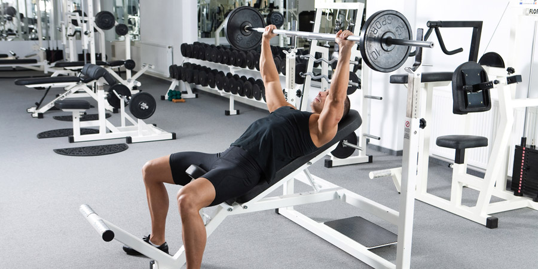

Introduction to Gym

Ahh, the gym. A wonderful place that allows you to pick and choose from a variety of fitness activities on a whim. If you are a new gym member, or are considering joining a gym, here is a quick overview of what you can expect. You may also like this Guide to Choosing the Right Gym for you.
If you like variety among your workouts, then the gym is the place for you. Different gyms will have different features, however, most will include the following sections:
Cardio machines
These will help you improve your cardiovascular fitness through sustained, low-intensity aerobic exercise.
- Common cardio machines include: Ellipticals, treadmills, stationary bikes, stair climbers, and rowing machines
- HIIT Workouts are some of the most effective cardio workouts for losing weight
- Ladder Workouts are great for building endurance & stamina
- A 15-minute Beginner Treadmill Running Workout
Weight machines
These are great for helping beginners build muscle when starting at ground zero.
- A beginner workout with focus on arms.
- A beginner workout with focus on legs.
- A beginner workout with focus on core.
Free Weights
A step-up in difficulty from weight machines, free weights are used in strength training.
- Here’s a complete Guide to the Weightlifting Room -it includes pictures and explanations of common free weight equipment.
- Not sure whether weight machines or free weights are right for you? Check out this article comparing free weights versus weight machines.
Aerobics classes and studio
A fun, instructor-led way to burn calories, increase flexibility, and tone muscles.
- Common aerobics classes include: Pilates, Yoga, Step, Kickboxing, Boot Camp, Zumba, and Cycling
- Spin class 101:What to expect